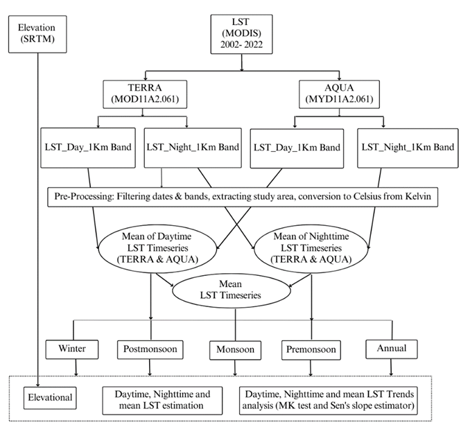
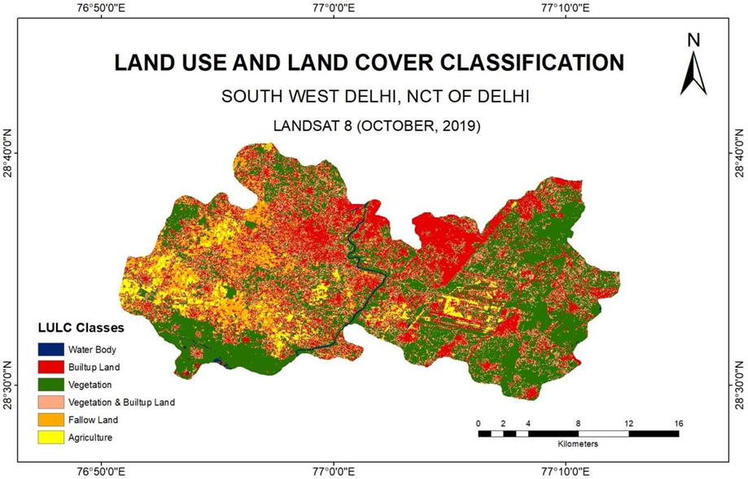
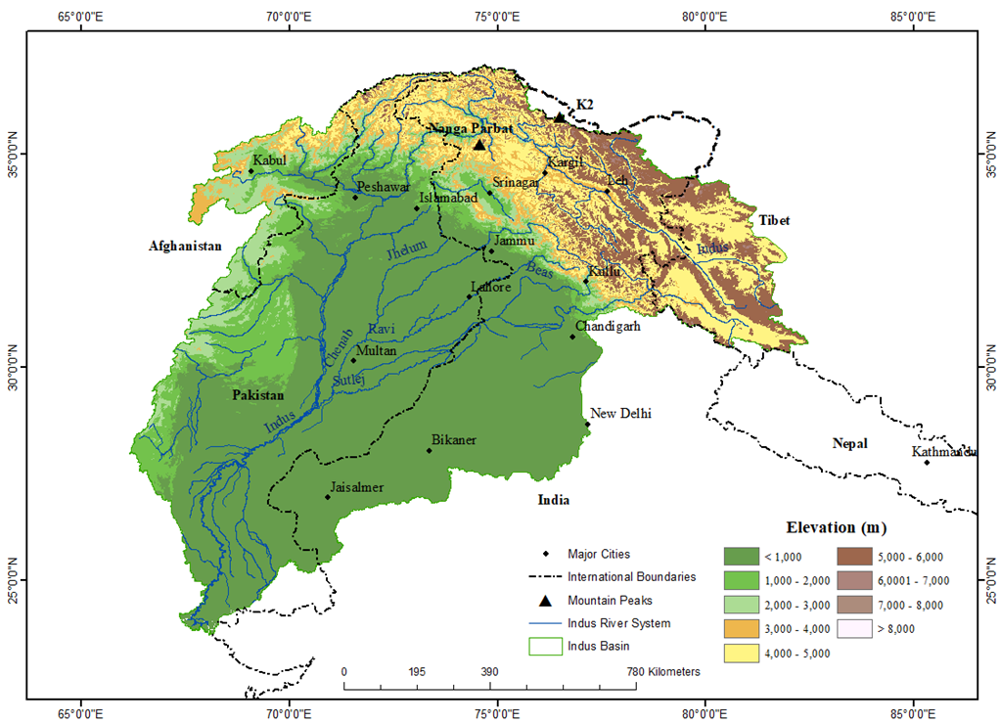
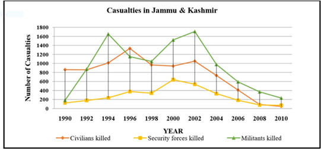

Research Projects

India Uranium Risk Mapping
Status: OngoingOverview: Predicting and mapping regional groundwater uranium hazards across vulnerable aquifers in India using machine learning algorithms.
Objectives: To model chemical controls, map high-risk pockets, and characterize geochemical parameters affecting uranium mobilization.
Study Area: Indo-Gangetic and Peninsular aquifers, India.
Datasets: CGWB water quality surveys, satellite climate layers, and soil geochemical properties.
Methods: Random Forest modeling, geo-spatial Kriging interpolation, and SHAP explainability analyses.
Results: Discovered localized pockets of uranium anomalies linked to bicarbonate complexes and heavy groundwater abstraction.
Fluoride Deep Learning Benchmarking
Status: OngoingOverview: Benchmarking deep neural networks against traditional machine learning to predict geogenic fluoride contamination in deep groundwater aquifers.
Objectives: Evaluate neural networks and tree-based ensembles (XGBoost, Random Forest) on unbalanced geochemical datasets.
Study Area: Hard rock aquifers of Southern and Western India.
Datasets: Well chemical assays, remote-sensing geological features, and climate parameters.
Methods: Convolutional networks (1D CNNs), deep multi-layer perceptrons, spatial cross-validation, and ROC-AUC metrics.
Results: Found that deep neural networks achieved high recall rates on localized fluoride anomalies, improving detection of contamination.


Arsenic Contamination Modelling
Status: PlannedOverview: Modeling arsenic concentrations across alluvial sediments to identify key environmental and anthropogenic mobilization drivers.
Objectives: Model arsenic dissolution kinetics under reducing conditions and assess seasonal mobilization variations.
Study Area: Brahmaputra and Ganges alluvial basins.
Datasets: Lithological logs, groundwater chemistry, and high-resolution digital elevation models.
Methods: Spatial regression, geological profiles overlay, and geochemical thermodynamic calculations.
Results: High concentrations of arsenic were found linked to shallow sand aquifers under high organic carbon sediments.
Population Exposure Assessment
Status: OngoingOverview: Estimating population-level exposure burdens associated with toxic drinking water sources using demographic overlays.
Objectives: Calculate spatial demographic overlap with uranium and fluoride contamination zones to evaluate human health hazard indexes.
Study Area: Rural districts across Northern India.
Datasets: National census maps, gridded population layers (WorldPop), and contamination hazard maps.
Methods: Spatial aggregation, toxicological dose calculations, and zonal statistics in GIS environments.
Results: Identified critical rural zones where over 1.2 million residents ingest drinking water exceeding WHO guidelines for uranium.


Governance Diagnostic Framework
Status: OngoingOverview: Developing resource diagnostics to analyze continuous water supply feasibility and urban water management in metropolitan Delhi.
Objectives: Map supply line leakage patterns, evaluate water security policies, and recommend infrastructure improvements.
Study Area: National Capital Territory of Delhi, India.
Datasets: Delhi Jal Board flow statistics, socio-economic household surveys, and geographic maps.
Methods: Policy diagnostics, network water balancing, and spatial regression of water leakage anomalies.
Results: Outlined supply loss zones and detailed governance models to support continuous 24/7 supply implementation.
Indus Basin LST Study
Status: CompletedOverview: Analyzing spatial and elevation-wise Daytime and Nighttime Land Surface Temperature (LST) trends across the Indus Basin over 20 years.
Objectives: To evaluate LST warming rates and analyze thermal variations across various elevations.
Study Area: Indus River Basin, High Mountain Asia.
Datasets: MODIS LST (Terra and Aqua, 1km grid) and SRTM Digital Elevation Models.
Methods: Mann-Kendall trend tests, Theil-Sen's slope estimators, and elevation zoning calculations on Google Earth Engine.
Results: Found localized warming rates in high-altitude zones, showing a thermal divergence between daytime and nighttime LSTs.
Publications: Mal, S., Agrawal, K., Rani, S. et al. (2023). Journal of Mountain Science.

Future Cryosphere Projects
Status: PlannedOverview: Modeling regional permafrost boundary dynamics and glacier changes in High Mountain Asia under climate change.
Objectives: Map the distribution of permafrost using thermal indicators (MAAT, BMAT) and analyze glacier mass balance variations.
Study Area: Hindu Kush Himalaya and Karakoram ranges.
Datasets: Multi-sensor satellite imagery (Landsat, Sentinel), snow-cover indices, and meteorological models.
Methods: Spatial thermal modeling, glacier velocity mapping, and multi-sensor data fusion.
Results: Development of predictive scenarios for runoff variations and structural permafrost degradation.